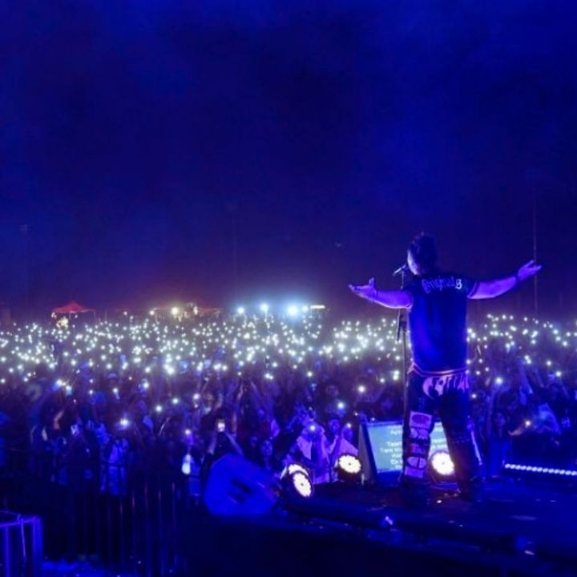
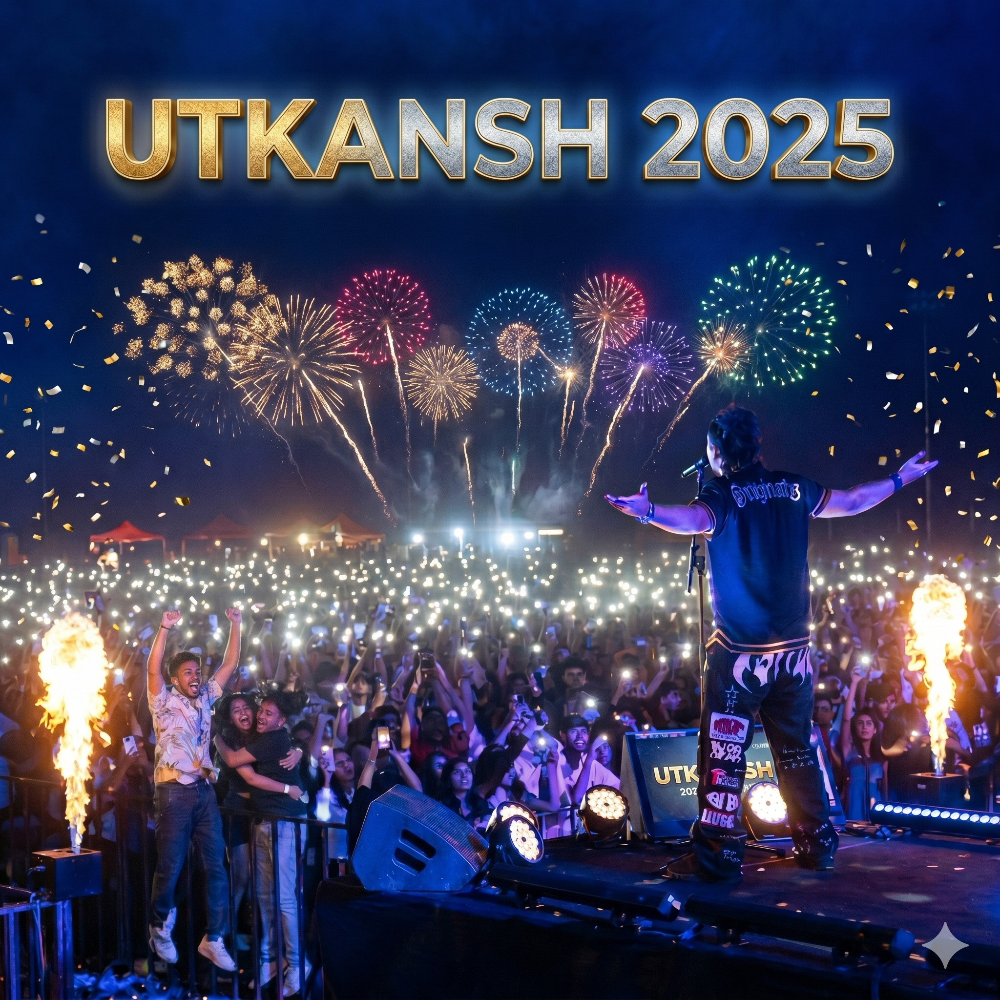

WDMC Portfolio
Initial Capture

Generative AI Morph

Redefining campus visual assets through the power of **Generative AI** for the Utkansh 2025 fest. This project explores the intersection of high-fidelity web design and computational creativity.